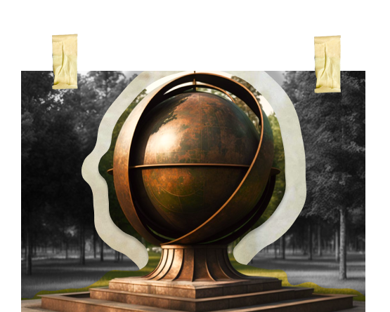

Международное сотрудничество
Напротив большого здания Счетной Палаты Назар увидел большую и красивую аллею. Золотом отливали металлические буквы с названием — МЕЖДУНАРОДНАЯ.
— Может, прогуляемся?, — предложил Назар Счётику, и они вдвоем направились ко входу аллеи.
Внимание привлек большой бронзовый шар, выделяющийся на фоне зеленых крон. Назар подошел к нему и с удивлением начал рассматривать массивную конструкцию. Словно на глобусе пересекались параллели и меридианы, а на поверхности были выгравированы очертания разных стран.
Назар опустил глаза и увидел у себя под глазами несколько бронзовых плиточек с эмблемами. Он хотел отойти подальше, но случайно наступил на одну из них — плитка перевернулась, и на обратной стороне появился текст.

ИНТОСАИ
(Международная организация высших органов аудита)
Международная организация высших органов аудита, которая поддерживает счетные палаты в разных государствах. Она устанавливает стандарты для проверки, помогает в национальном управлении. Кроме этого, ИНТОСАИ помогает высшим органам аудита из разных стран поддерживать сотрудничество между собой. На совместных конференциях эксперты из разных государств обсуждают актуальные проблемы из сферы государственного аудита. На требованиях ИНТОСАИ строится российский закон “О Счетной палате Российской Федерации”

ЕВРОСАИ
(Европейская организация высших органов финансового контроля)
Европейская организация высших органов финансового контроля, объединяющая 51 европейских высших органов финконтроля и Европейскую счетную палату. Эта организация входит в ИНТОСАИ. Она появилась в 1990 году для того, чтобы государственные аудиторские компании из разных стран могли сотрудничать друг с другом. Представители счетных палат обмениваются опытом, информацией и документацией. Особое внимание организация уделяет созданию независимых органов государственного аудита в странах с переходной экономикой Центральной и Восточной Европы.

БРИКС
(англ. BRICS – Brazil, Russia, India, China, South Africa)
Неформальное объединение стран с крупной развивающейся экономикой, у которых частично совпадают интересы — это Бразилия, Россия, Индия Китай, Южная Африка. Они сотрудничают в сферах политики, экономики и безопасности. Страны-участницы стали партнерами в вопросах международного сотрудничества высших органов аудита. На консультациях, саммитах и встречах происходит обмен опытом, который позволяет углубить сотрудничество между ведомствами.

ЕАЭС
(Евразийский экономический союз)
Евразийский экономический союз, который представляет собой международную организацию региональной экономической интеграции. В состав союза входят пять стран: Республика Армения, Республика Беларусь, Республика Казахстан, Кыргызская Республика и Россия. Аудиторы этих государств могут проводить проверки в других странах экономического союза. Их действия регулируются международными стандартами аудиторской деятельности и кодексу этики профессиональных бухгалтеров.

ШОС
(Шанхайская организация сотрудничества)
Шанхайская организация сотрудничества (ШОС), которая занимается вопросами безопасности и экономического сотрудничества между странами Азиатского региона. В ее состав входят восемь государств: Китай, Россия, Киргизия, Казахстан, Таджикистан, Узбекистан, Пакистан и Индия. Они работают над тем, чтобы органы государственного аудита работали эффективно — например, проводят совместные и параллельные проверки. Для российской Счетной палаты это одно из перспективных направлений сотрудничества.

ЕВРОРАИ
(Европейская организация региональных органов внешнего финансового контроля)
Европейской организации региональных органов внешнего контроля государственных финансов, которая появилась в 1992 году для того, чтобы органы внешнего государственного аудита укрепили сотрудничество между собой. В этой организации представлены региональные контрольно-счетные органы из 16 стран — в их число входят счетные палаты 16 российских регионов. Коллеги из разных стран делятся своим видением проблем эффективного использования государственных средств.
Назар прочитал все, что было написано на плиточках, и догадался.
—Так вот оно что! — воскликнул он, — мы не одни такие. В других странах тоже есть Счетные палаты, которые стоят на страже финконтроля. Здорово, что они решили объединиться и помогать друг другу с решением проблем!
Довольный своей находкой, Назар продолжил прогулку по Международной аллее.